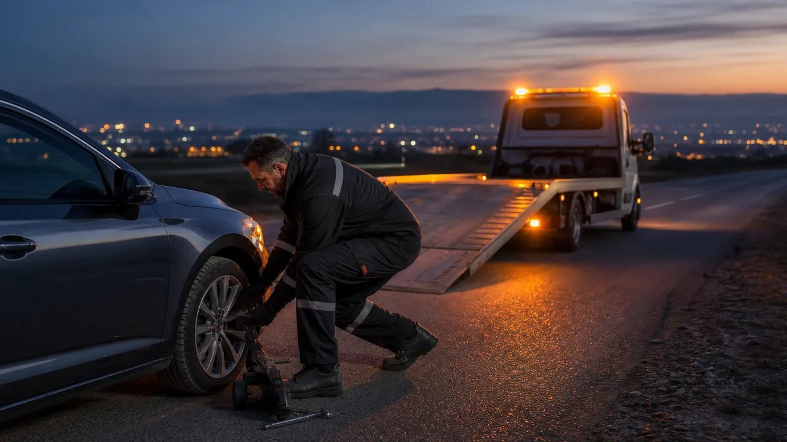

Tractări auto
Ridicare și transport pe platformă pentru autoturisme defecte sau avariate.
Vezi detalii150 lei+ 2,5 lei/km
Tractări auto Argeș · 24/7
Tractări auto, transport și asistență rutieră în Pitești, pe A1 și în tot județul Argeș. Ne trimiți locația, noi pornim spre tine.
Acoperire localăIntervenții 24/7

Despre TractariAG
Evaluăm situația de la primul apel și alegem soluția potrivită pentru mașină, traseu și condițiile de acces.
Răspuns directDiscuți cu echipa care organizează intervenția.
Cost comunicatPrimești estimarea înainte să pornim spre tine.
Transport sigurVehiculul este încărcat și fixat cu atenție.
Serviciile noastre
Intervenții rapide sau transport planificat, cu tarife explicate de la început.
Ridicare și transport pe platformă pentru autoturisme defecte sau avariate.
Vezi detaliiAjutor la fața locului pentru baterie, pană sau alte probleme neprevăzute.
Vezi detaliiTransport programat pentru vehicule, cu încărcare, fixare și livrare atentă.
Vezi detaliiLocalizare rapidă pe autostradă și pe drumurile principale din județul Argeș.
Vezi detaliiDe ce TractariAG
Știi cine vine, ce soluție primești și care este costul estimat.
Zona de intervenție
Deplasează harta, folosește zoom-ul și apasă pe un pin pentru informații.
Ai nevoie de ajutor acum?
Disponibili zi și noapte, inclusiv în weekend.